01 / PROTECT
Biological
integrity
Zero-flicker displays, circadian-aware light, posture sensing, and safer radio architecture for the body behind the screen.
↗Human signal detected. The future is ready.
Sound on by defaultFrom adaptive displays to ambient intelligence, Mobility X is building the interface between human potential and the machine world.
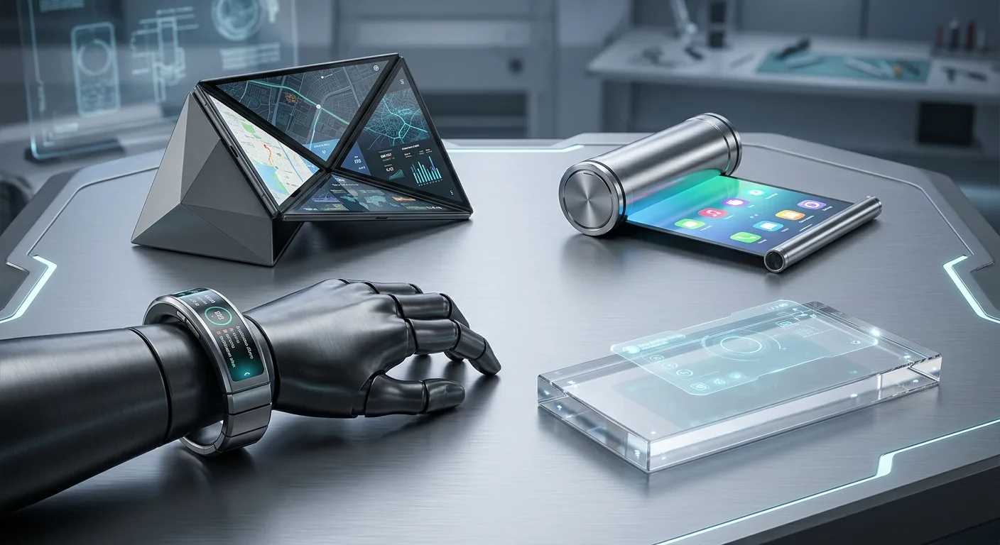
Technology should feel like an extension of self.
The future of connection is you.
We are moving beyond the fragile glass slab toward mobile systems that protect attention, understand the body, and make complex intelligence feel natural.
Map the architecture →Concept frames from the Images folder in the Mobility X Drive archive, assembled as a browsable visual index.
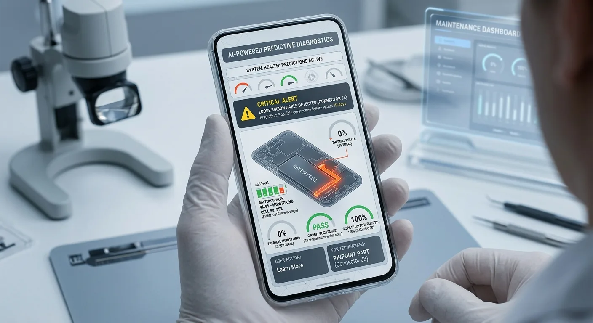
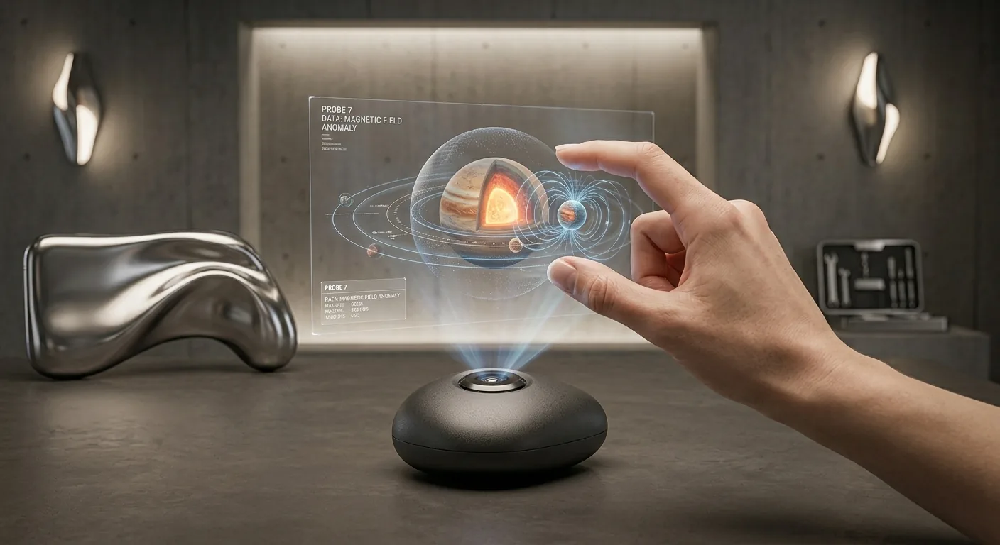
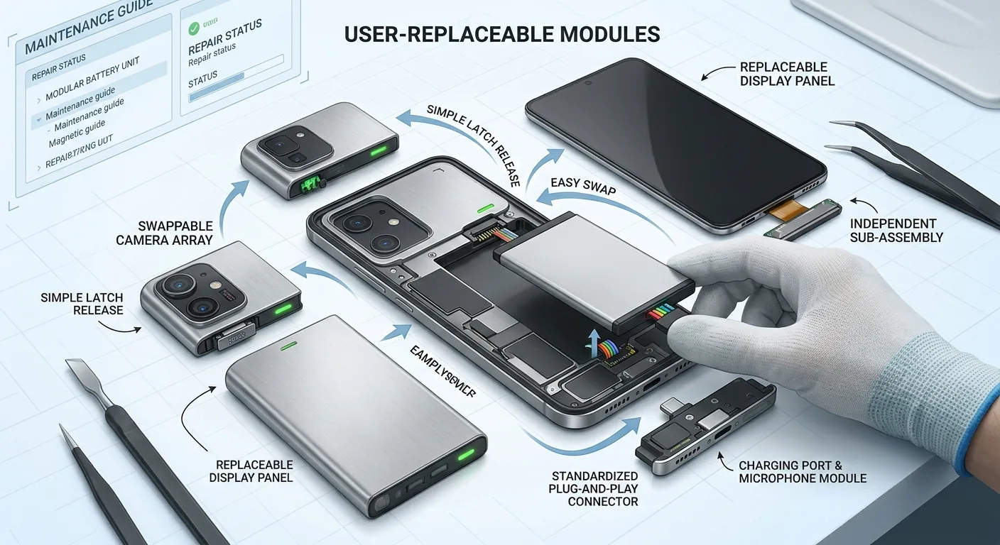
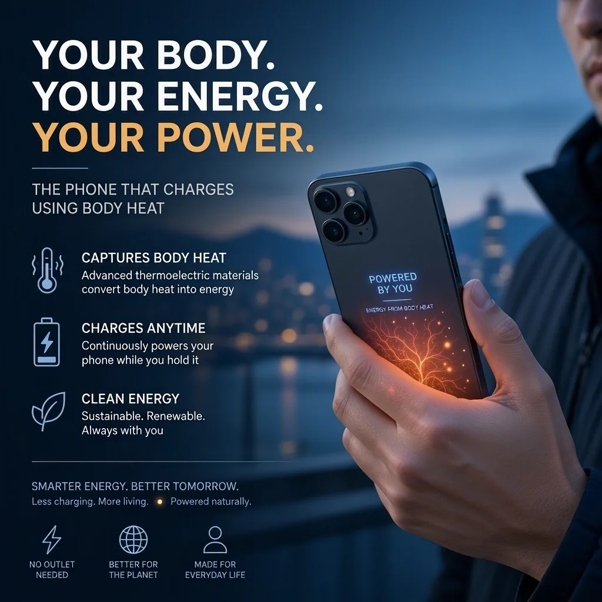
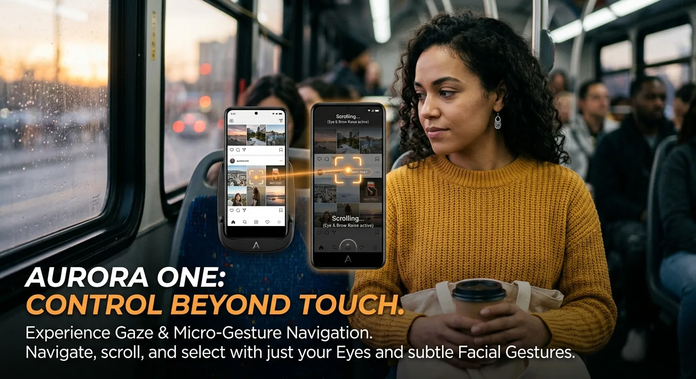
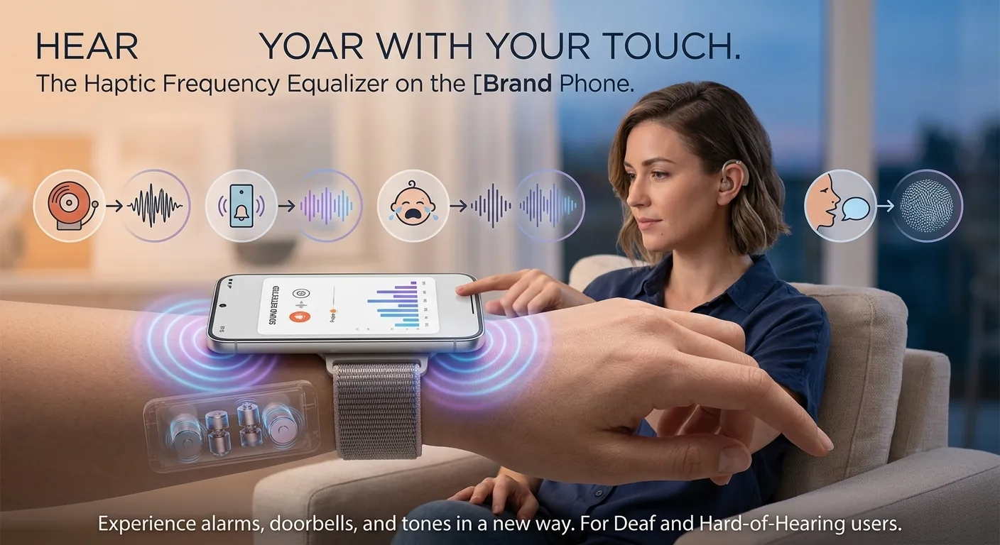
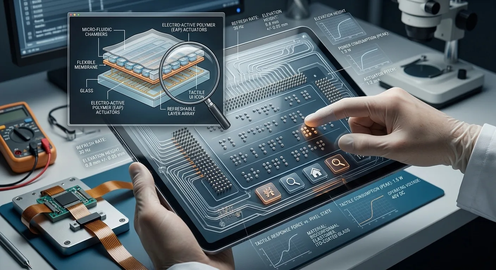
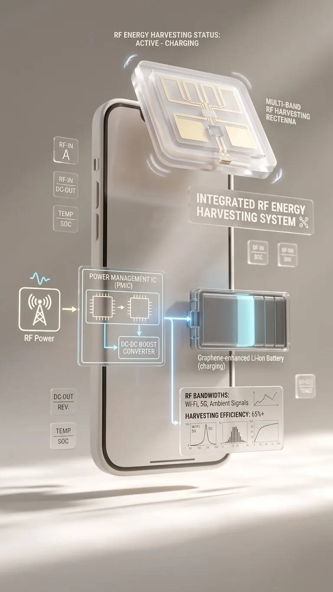
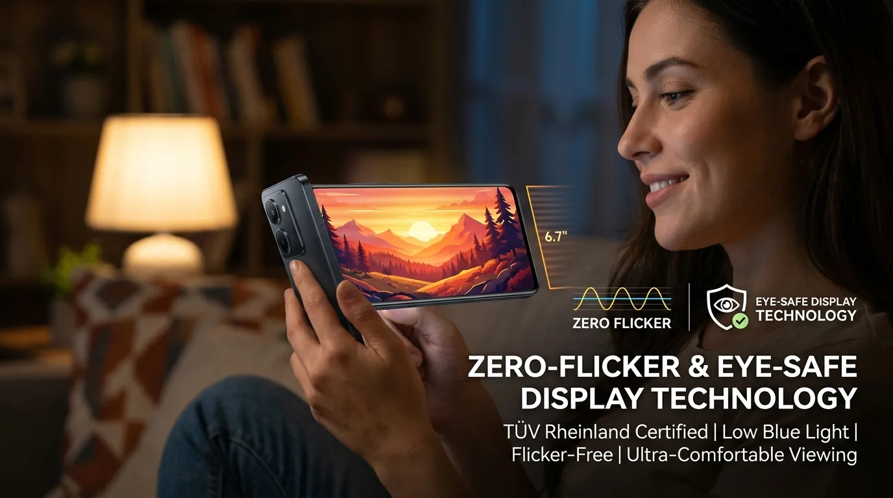
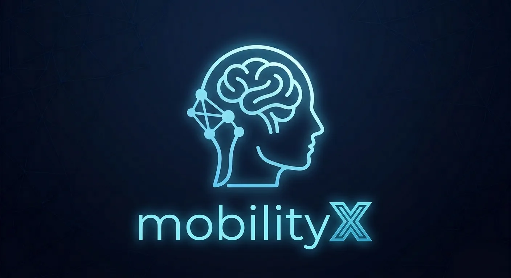
A new operating philosophy
A living stack of hardware and software ideas designed to give people more agency over the objects, spaces, and futures they inhabit.
Zero-flicker displays, circadian-aware light, posture sensing, and safer radio architecture for the body behind the screen.
↗From gaze to touch, sound, and intent — the phone learns to meet humans where they are.
↗Local intelligence, modular longevity, and an anti-addiction OS that returns control to the individual.
↗Real concept studies from the Mobility X archive, embedded directly from Google Drive.
A new kind of downtime
How about trying the new Space Guardian!
A tiny arcade experiment designed for the moments your signal disappears. No account. No network. Just reflexes.
Play Space GuardianBy 2126, carrying a device may be a relic. The interface becomes adaptive, bio-integrated, and present only when it is needed.
A simple map of the Mobility X experience — from the thesis to the archive, experiments, game, and future horizon.
A living conversation
Ideas, reactions, and future-facing notes from the people exploring Mobility X.
“A beautiful way to make the future of mobile feel tangible, human, and alive.”
“The Space Guardian moment is such a smart offline touch. It makes the whole concept memorable.”
“The gallery and motion lab make the ideas easy to explore without losing the sense of wonder.”
Have an idea for what comes next?
We welcome suggestions, questions, and thoughtful ideas about the future of mobile technology.
Send your suggestion ↗ghphonerepair2017@gmail.comThe next nexus is already moving.
Leave your signal
Share a thought
with the network.
Your comment is saved in this browser for this static site experience.